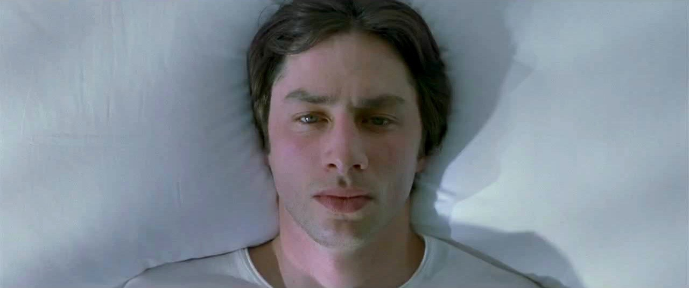
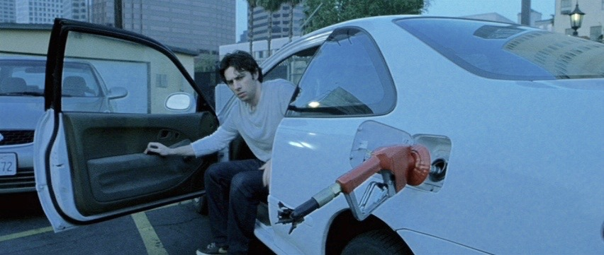
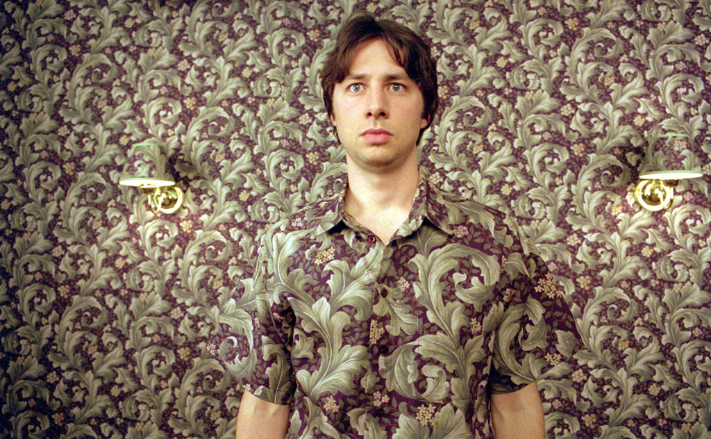

The death of his mother brings small time actor, Andrew Largeman, home to mourn his mother's death and to forge new relationships and mend old ones. The stark wide frame shots illustrate the distance and emotional detachment that Largeman has been feeling for many years.
  